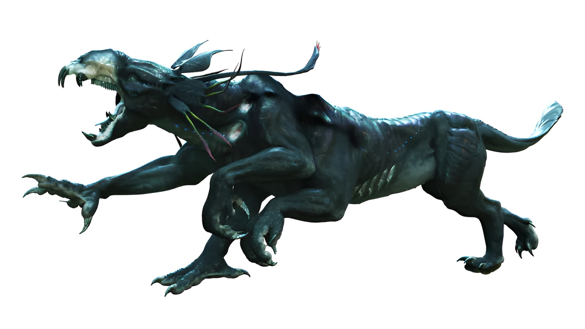

Thanator (Na'vi Name: Palulukan)
Thanator is the most terrible predator of the tropical forest. Resembling an earth panther, this huge, powerful omnivore is unique in its ability to dominate its territory and strike fear into Pandora's largest and fiercest creatures. The predator's senses are so developed that it can detect prey at a distance of up to 8 miles (13 km). While their extremely powerful jaws filled with long, razor-sharp teeth are perfect for ripping flesh, its armored tail can deliver just as deadly blows. In a matter of seconds, his six paws can accelerate up to 64 km/h, and he is also incredibly agile